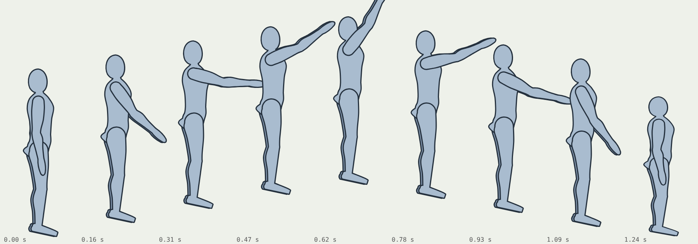
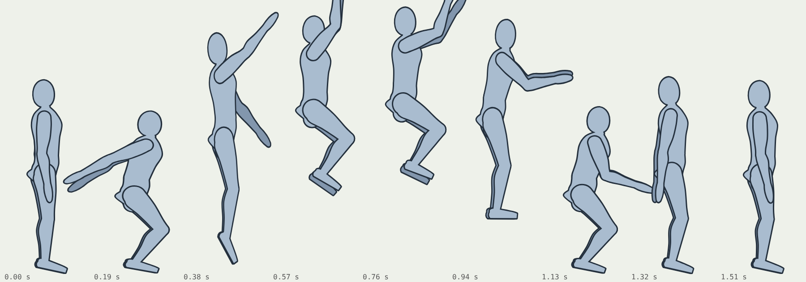
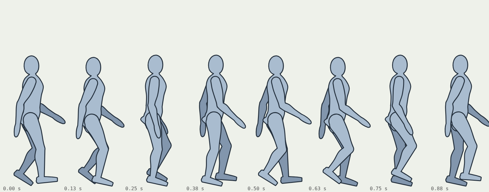

Can we draw a character professionally in SVG pieces, rig it with pivots and IK, and animate it the way Spine and Rive games do? Six practice reps on the mannequin, each changing one thing, scored against the body study's checks. Play with the result here.
Grab either hand of the front puppet and pull: two-bone IK bends the elbow, and past full reach the arm stretches up to 12% (the cartoon stretch). The bones view is a workbench helper; a player never sees it.
Each rep is drawn at rest and in a stress pose that bends every joint near its limit. Creative checks are the 12 from the body study (by eye, 0 to 2 each; under 16 is a study, not a pick). Joints covered and seams are measured by the scorer in Chromium.
Same rig, same pieces. Rep 5 moves everything at once and flattens on landing. Rep 6 crouches first, stretches at take-off, tucks, reaches for the ground and squashes without losing area (width times height stays 1), with arms that arrive late and overshoot.



The rig format is shared with the 2D Mannequin Puppet (AW-STUDY-0038), so both feed the Character Studio. Each turnaround view becomes its own rig with the same bone names; a costume is a skin, a different set of pieces on the same bones.
Kit: simulations/rig2d.mjs. Format: docs/oracle/rigging/RIG2D_FORMAT.md. Builder and scorer: tools/rig2d/.